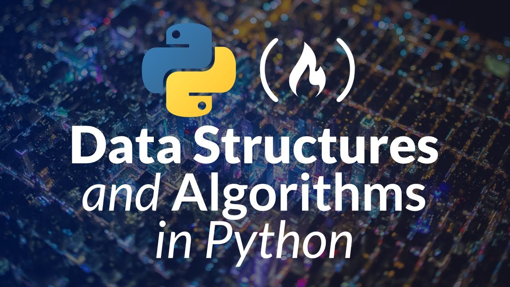

The video covers the basics of Python programming, including:
Operators: arithmetic operators like addition, subtraction, multiplication, and division, as well as comparison operators like greater than, less than, and equal to
Variables: how to store and retrieve data
Functions: how to define and call functions, and how to use them to return values
Conditional statements: how to control the flow of your program using if, else, and elif statements
Loops: how to repeat a block of code multiple times using for and while loops
Lists: how to create and manipulate lists of data
Strings: how to work with text data
Dictionaries: how to store and retrieve data using key-value pairs
The speaker, Jim, starts the video by explaining why OOP is important for software developers. He says that understanding OOP can help you become a better Python developer and land your first job as a software engineer.
The basics of OOP, including classes, objects, attributes, and methods
Inheritance, which is the ability of a class to inherit properties from another class
Polymorphism, which is the ability of an object to take on different forms
The speaker uses a store management system as an example to illustrate these concepts. He shows how you can create classes to represent different types of items in the store, such as phones and laptops.

This is a beginner-friendly course on common data structures and algorithms in Python. The course is taught by Akash NS, the co-founder and CEO of Jovian.
The course is designed to help you improve your programming skills, solve coding challenges, and ace technical interviews. You will learn about common data structures such as lists, dictionaries, and sets, as well as algorithms such as sorting, searching, and recursion.
The course is self-paced and consists of six weeks of video lectures, coding assignments, and a course project. The video lectures are taught by Akash NS and are accompanied by Jupyter notebooks that you can use to run the code and practice the concepts.